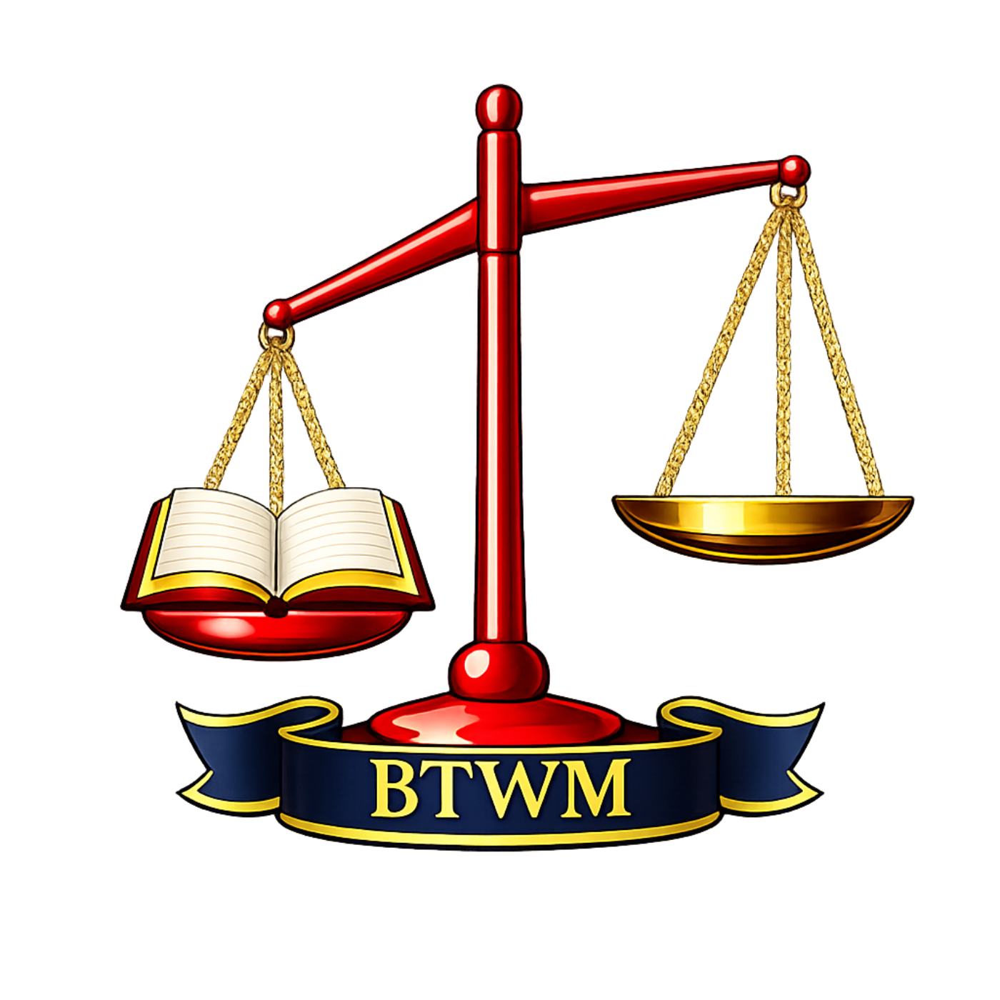
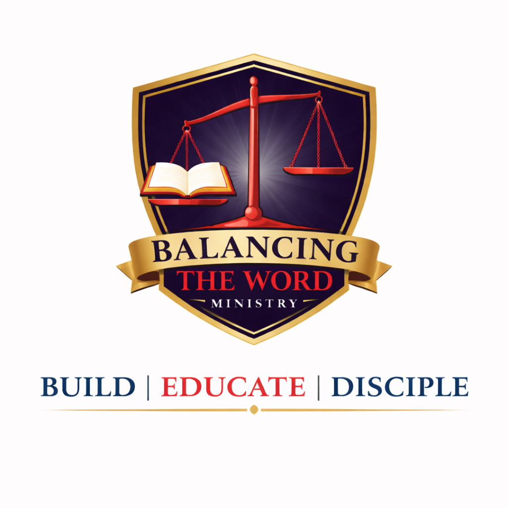

The BTWM Story
Since surrendering my life to the LORD, I have worshiped in churches across many denominations, cultures, and communities. Because of frequent moves—from large cities to small rural towns—I continually sought places where I could grow in faith and remain grounded in Scripture. Over time, this journey revealed a sobering truth.
As I matured in the LORD and grew deeper in God’s Word, I found that very few churches faithfully teach the Scriptures in their fullness. Too often, passages are shaped to support man-made doctrines, personal agendas, or self-interest rather than presented with clarity, balance, and truth. This realization deeply burdened my heart.
For many years, I ministered to children in my neighborhoods, opening my home to teach, love, and point them to Jesus. Though the fruit was evident, consistent support was lacking, and eventually, I experienced burnout. Like Peter, I became weary of being tossed to and fro by conflicting doctrines and messages that did not align with Scripture.
Stepping away from institutional church led me back to the presence of God. The LORD renewed me through His Word, reigniting my passion for prayer and Scripture. This renewal birthed Balancing the Word Ministry—a calling to teach believers how to study the Bible, grow in discernment, and mature in faith. Our mission is to present the pure Word of God with balance between the Old and New Testaments, equipping believers to live out truth with clarity and conviction.
Visual & Theological Meaning Behind BTWM
- Navy Blue — Represents the sovereignty of God…
- Scarlet Red — Represents the blood of Jesus Christ…
- Gold — Represents the purity, holiness, and glory of God…
- The Shield — Represents the shield of faith…
- The Scales & Bible — Represents balancing the Scriptures with truth, clarity, and faithfulness.

What We Teach
Read the foundational teachings of Balancing the Word Ministry, including our statement on Scripture, salvation, the Church, baptism, Communion, and the hope of Christ's return.
Read What We TeachTen Core Principles
- We believe that God so loved the world and demonstrated His love toward humankind by giving His only begotten Son (John 3:16a; Romans 5:8).
- We believe that Jesus Christ is the only begotten Son of God, who became the final sacrifice for our sins (John 3:16b; Hebrews 10:10).
- We believe that Jesus Christ was crucified, resurrected, and now sits at the right hand of the Father (1 Corinthians 15:4; Mark 16:19).
- We believe that Jesus Christ is the only way unto salvation (John 14:6; Acts 4:12).
- We believe that whoever believes in the Gospel of Jesus Christ and confesses Him as Lord will inherit eternal life (Romans 10:9; Acts 16:31).
- We believe in the baptism of the Holy Spirit and that all spiritual gifts, ministries, and the fivefold ministry exist and are active in our modern era (Acts 1:8; 1 Corinthians 12:8-10, 28; Ephesians 4:11).
- We believe that the Holy Scriptures are true, living, and active in our modern era (Hebrews 4:12; Isaiah 40:8).
- We believe we must diligently abide within the boundaries of His written Scriptures, as they are our measuring rod for how we live our lives and guide our beliefs (Deuteronomy 4:2; Revelation 22:18-19).
- We believe God is abundant in lovingkindness, goodness, and grace (1 Chronicles 16:34; Romans 5:20).
- We believe in practicing the New Commandment (John 13:34-35; 1 John 2:10).

My Story
From an early age, my life was marked by instability, trauma, and loss. Throughout my childhood and teenage years, I experienced abuse, displacement, and time in foster care. Yet even in those difficult seasons, God was drawing me to Himself with His grace and mercy.
In the middle of confusion and pain, the Bible and prayer became my refuge. Although I believed in God and knew about Jesus, I did not fully understand salvation or the transforming power of surrendering my life to Him. For many years, I searched for healing, freedom, and purpose.
As a young wife and mother walking through deep brokenness, I cried out to Jesus with a surrendered heart. In that moment, everything changed. I experienced true forgiveness, redemption, and the overwhelming love of Christ. Shortly afterward, I received the baptism of the Holy Spirit, and the Lord began renewing my mind, healing my heart, and transforming my life from the inside out.
My first experience in ministry was serving as a Children's Church volunteer. What began as a simple desire to help grew into a deeper calling to minister to children and families within the community. Over time, this ministry expanded into a community outreach where I organized events, conducted Bible lessons, and ministered to children searching for love, encouragement, and hope.
After several years, I became the assistant pastor of a newly established church, helping oversee the children's department and community outreach ministries. Throughout the years, I have also served as a church secretary, led prayer meetings, participated in community outreaches, and used creative gifts in ministry through writing children's Bible curriculum, designing flyers, and creating outreach materials.
Through every season of ministry, God has shown me that true ministry is not about recognition or position, but about loving people, serving faithfully, and pointing others to Jesus Christ.
Beyond ministry, God has richly blessed my life. I am the mother of four incredible children and grandmother to amazing grandchildren, each one a precious gift from His hand. Through every trial and blessing, the Lord has continually shown me that His grace is sufficient, and His love never fails.
My life is a testimony that Jesus Christ still redeems, restores, heals, and transforms lives. No matter how broken the past may seem, God is able to bring beauty from ashes and purpose from pain. My prayer is that through my story, others will come to know the hope, freedom, peace, and new life found only in Him.
My journey stands as a testimony that God redeems, restores, and empowers all who come to Him in faith.